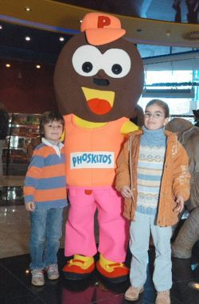

Phoskito
 De: La Frikipedia, la enciclopedia extremadamente seria.
De: La Frikipedia, la enciclopedia extremadamente seria.
| De la serie alimentos y otras vainas:
|
|
|
| Nombre:
|
Phoskito
|
| Tipo de Comida:
|
Lácteo/chocolateado
|
| ¿Como se Come?
|
mordiéndolo
|
| ¿De donde Proviene?
|
del estómago de algún animal
|
| Ingrediente Basico:
|
Truños y...leche... todo esto radiactivo
|
| Forma de Presentación
|
redonda (en espiral)
|
| Sabor:
|
a bollicao radiactivo
|
Los "Phoskitos", más conocidos como "Fosquitos" por los niños, son unos pastelillos de chocolate con una forma muy peculiar (¡En espiral!) y con lo que parece ser una capa de bizcocho en cada vueta de la espiral.
Orígenes
El señor Strafenzshaüssen Phoskitticus estaba en su taller haciendo una trampa para ratas casera, ya que de vez en cuando encontraba medio trozo de pastel de chocolate mordisqueado en la nevera. Por ello decidió hacer una trampa para ratas a las que le gusta el pastel de chocolate .
Puso su preciada trampa en forma de pastel en la nevera y a los 10 minutos encontró a su único hijo de 8 años junto a la nevera con su trampa en las manos y la boca llena de chocolate, el cual contenía veneno. En el entierro de su hijo se aburría tanto que decidió ponerse a reflexionar. Se dio cuenta entonces de que a su hijo le hubiera gustado más aquel pastel si no llevara tanto veneno.
Estos son los orígenes del preciado pastelito. Os preguntaréis porqué lo de la forma en espiral. Bien, eso es aún un misterio, pero os puedo asegurar que agentes del CE-ESE-I lo están investigando. De hecho, ya se ha descubierto que está relacionado con que nuestro amigo Strafenzshaüssen Phoskitticus creía que esta peculiar forma iba hipnotizar a las ratas. También hay varias hipótesis que afirman que se basó en la típica mierda de perro enroscada chafada por una prensa por su gran odio a la rata (que luego resultó ser su único hijo que murió por sobredosis de chocolate con raticida).
Phoskitín, el ser
 Phoskitín acechando a dos presas inocentes
Todos conocemos ya la historia de cómo surgieron los "Phoskitos", más conocidos como "Fosquitos" por los niños, de la mano de nuestro gran amigo Strafenzshaüssen Phoskitticus. Bien, pues esta es la historia de cómo creó (por accidente y para su desgracia) a Phoskitín, el ser.
Todo comenzó con los experimentos para crear un nuevo pastelito basándose es su gran error en forma de trampa mortal para niños. A partir de la trampa, empezó a pensar en cómo le gustaría más a los niños, y en una de las pruebas, mezcló todo lo anterior con plutonio envejecido. El plutonio le saltó a un ojo y tuvo que ir corriendo al váter para lavárselo. Aprovechando que estaba allí, echó una meadita. El señor Strafenzshaüssen perdió el ojo al instante, pero un solo ojo fue bastante para observar horrorizado su creación, Su Phoskito había cobrado vida y era tan alto como él. El pobre Strafenzshaüssen Phoskitticus fue violado por su creación, y en el hospital, ya agonizando, declaró estas horripilantes palabras:

|
Si, fue horrible, a mí no me dolía el ojo ya porque el plutonio había entrado en mi cerebro y había anulado mi capacidad de sentir dolor. Cuando vi a ese ser, mi capacidad de sentir terror se multiplicó por infinito al cuadrado y no pude hacer otra cosa que acojonarme y quedarme quieto. Entonces él se acercó y... y... Oh Dios... no puedo seguir, coja a ese terrorífico ser, y sacrifiquenlo
|

|
| Declaraciones recogidas por un periodista cualquiera
|
Murió segundos después a causa de una parada cardiorespiratoria (la gente especula que no es así, y que murió al meterse un cacahuete por la nariz que le llegó al cerebro y al juntarse con el plutonio ya alojado allí cobró vida y se comió el seso de este, para luego siucidarse dentro de la cabeza de nuestro querido amigo). La mujer de Strafenzshaüssen patentó el pastelito, al cual le quitó gran parte del veneno (no todo) que llevaban los 100 proyectos de pastelitos originales (hay rumores de que Strafenzshaüssen tenía una deficiencia mental grave, pues no cabe en la cabeza, que una persona cuerda no pueda entender porqué morían los niños voluntarios a probar el pastelito en pruebas, concretamente murieron 100 niños, a parte de su propio hijo)
Phoskitín sigue en libertad y se dedica a raptar niños haciéndolos creer que les va a dar Phoskitos. Después pide una recompensa a la familia, y cuando se hace el intercambio, viola a los mediadores y luego si puede, se come a los niños, que mas tarde aparecen increíblemente vivos en una cagada del tamaño de un rinoceronte. Está en busca y captura, y aunque no salga por la tele, tiene el mimo nivel de alerta que Bin Ladden. También se rumorea que es fan Nº1 de Pasión de Gavilanes, aunque ya haya terminado hace años, se especula que puede habése grabado en vídeo todos los capítuls y verlo todos los días.
¿Sabías que...
Después de comerse un Phoskito entero, esto fué lo que imprimió en sus calzones al tirarse un aparentemente cuesco con regalito
- Si te zampas 15 camiones de Phoskitos en 5 segundos obtienes una décima parte de la fuerza de chuck durante una fracción de segundo.
- El "conzumo" que se toma Hércules en el juego para la play al recuperar vida en realidad es batido de Phoskito.
- Los Phoskitos están muy buenos.
- Los Phoskitos están hechos con la misma receta que en sus orígenes (mencionado arriba).
- Dios creó a Strafenzshaüssen para que inventara los Phoskitos
- Si miras fijamente un Phoskito girando durante 10 minutos quedas hipnotizado de por vida pensando que eres un miembro de las tortugas ninja
- Si no puedes con tus enemigos no te unas a ellos, comete un Phoskito y podrás.
- Si dices delante del espejo del baño "Strafenzshaüssen" con la puerta cerrada con pestillo...no pasa absolutamente nada y quedas como un gilipollas.
- Si le das a una chica un Phoskito en tu cita pueden pasar dos cosas:
- Que caiga muerta, con lo cual tendrías que testificar que nunca viste un phoskito.
- Que se enamora de ti y os acabais casando y teniendo Híbridos de Humanos y Phoskitos.
- También se especula que Strafenzshaüssen intentaba crear una especie de "cinta aislante" de bizcocho que usa el chocolate como pegamento.
- Hay 2 tipos de Phoskitos:
- Los que existen.
- Los que no existen.
- Si te ha hecho gracia lo de antes has de ir a un buen psiquiatra.
- Un Phoskito inspiró a Einstein a formular la teoria de la relatividad, aún no se sabe como, ni poruqé.
- En el primer juego de pokémon (rojo , azul o verde) si consigues hablar con todo el mundo en 20 segundos aparece en tu casa un Phoskito, y si ese Phoskito se lo das de comer a un pokémon se convierte en la fusión de todos los pokémon (inclusive mew & Mewtwo)y resulta ser Chuck Norris).
- Si te come un Phoskito entero (sin morder) luego cagas mas o menos como la foto de la infobox.
- La peste bubónica se podria haber erradicado con un par de Phoskitos por habitante.
- Un Phoskito no tiene ni principio ni fin, porque al igual que las rectas, las espirales también son infinitas.
- Un Phoskito es indestructible, osease, no se puede destruir, excepto por Chuck Norris.
- Si fraccionas un Phoskito en billones de trocitos en una décima de segundo, conseguirás un autógrafo de Chuck Norris, el cual será destruido por las autoridades, por ser considerado de excesivo valor monetario.
instrucciones
Si después de leer esto te entran unas ganas irresistibles de jalarte uno de un bocado para pintar un cuadro con el culo como el de la foto de arriba, solo has de seguir las pertinentes instrucciones:
- Estas cansado... pero de no hacer nada, lo primero que has de hacer es levantar el culo ese con el que vas a pitar el cuadro de un pedo de la silla (o sillón) del escritorio (o donde cojo nes tengas el ordenador).
- Lo segundo es pillar pasta. Porque el dinero puede intercambiarse por bienes y servicios (no penséis en que tipo de servicios). Bien, la pasta ha de ser de tu bolsillo, porque dice el mito que si no es tuyo el dinero, el Phoskito te sabe ácido. Pero si tu ucha está mas pelada que el culo de un mandril, debes pillarle pasta a los ricos para darselo a los pobres (como Robin, de Batman y Robin), y que pobre está mas necesitado que tú, que llevas todo el día sin despegar el culo con el que luego harás el cuadro en blanco y negro (o blanco y marrón) y no te has levantado ni para beber un poco de agua del grifo.
- Salir de tu casa. Debes esquivar a tu madre y para que luego no te remuerda la conciencia (que se que eres un buen chico) has de abrir muy despacio la puerta para no hacer ruido, salir fuera de tu casa y a punto de cerrar gritas "Mamá, me voy a mercadona" y cierras sin darle a tu madre oportunidad de discrepar.
- Llegar a mercadona. Una vez en la calle has de recordar donde cojo nes estaba el maldito mercadona, si no te acuerdas, simplemente pregunta por la calle. (si nadie te sabe indicar, pregunta a los transeúntes, que ellos viven en la puerta).
- Encontrar los Phoskitos. Una vez has llegado a mercadona, debes encontrar los phoskitos. Si no los encuentras, no mates a nadie, aún no se ha perdido todo, primero pregunta a alguien que entienda, (como una abuela): "disculpe señora, ¿sabría usted decirme donde paran la bolleria?" si te contesta la señora esto: "marrano pervertido, ¿pero que se cree que soy yo?, ¿una fulana de esas que hace guarreridas españolas con otras mujeres?, corre y pregunta a otra persona. si por el contrario, te contesta esto: "claro que si joven, tengo que ir todos los dias para poder alimentar a mi nieto, es como una droga, cuando prueban la bollería no paran..." sigue las instrucciones que te indique la amable señora. Por el contrario, no lo encuentras ni el la bolleria, y le preguntas a un empleado y dice que no tienen, ya puedes matar a quien quieras, pues todo el esfuerzo habrá sido en vano.
- Pagar. Puede suponer el mayor esfuerzo de todo, desprenderse de tus preciadas moneditas. Pero luego se ve recompensado por el gozo. Primero has de ponerte al final de una cola (o por en medio, si cuela) y cuando llegue tu turno, darle la caja de phoskitos a la cajera (por algo se llaman así) y cuando te diga lo que has de pagar, dárselo, no vale coger la caja y salir corriendo, a menos que seas campeón de atletismo y vayas con pasamontañas.
- llegar a casa. Lo mismo que ir a mercadona pero en sentido inverso.
- infiltrarte en tu cuarto sin que se entere nadie. Cuando tu madre entre y diga: "¿donde estabas?" tu contestas "he estado toda la tarde aquí, en mi habitación" y niegas haber salido de la misma.
- Gozar. Ya puedes saborear la creación de nuestro amigo Strafenzshaüssen (con un 60% menos de veneno para ratas).
- Como quieras hacer el cuadro ya es cosa tuya, pero hay que hecharle imaginación.
Autor(es):
- Khazike Khashondo
- Frikih
- Skhuavan
- Uchiha varo
- Jimmy24
- Prototype
- Groovy edward
Frikipedia 2005-2016, Licencia
GFDL 1.2 - Extraído por FrikiLeaks